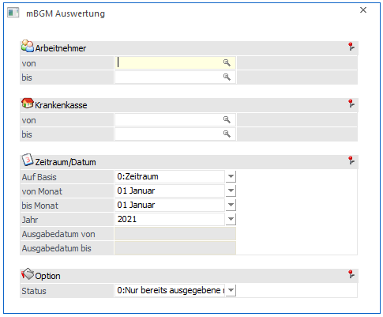
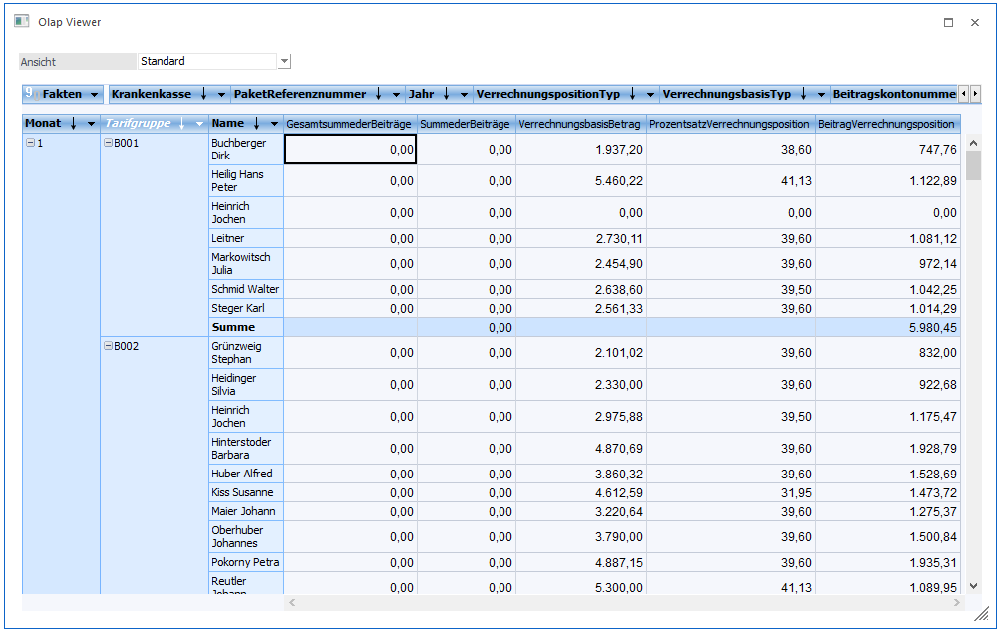

Im Menüpunkt
1 Auswertungen
1 mBGM Auswertung
können mBGM (monatliche Beitragsgrundlagenmeldungen) mittels Cube ausgewertet und analysiert werden.

Folgende Selektionen können vorgenommen werden:
Ø Arbeitnehmer
Hier kann bei Bedarf auf einen bestimmten Arbeitnehmer eingeschränkt werden. Wird keine Einschränkung vorgenommen, erfolgt die Auswertung über alle Arbeitnehmer.
Ø Krankenkasse
Hier kann bei Bedarf auf eine bestimmte Krankenkasse eingeschränkt werden. Wird keine Einschränkung vorgenommen, erfolgt die Auswertung über alle Krankenkassen.
Zeitraum/Datum
Ø Auf Basis
Hier kann mittels Auswahllistbox gewählt werden ob nach:
0 Zeitraum
1 Ausgabedatum
ausgewertet werden soll
Ø Von Monat
Ø Bis Monat
Ø Jahr
Wurde als Basis die Option 0 Zeitraum gewählt, dann können die Felder von Monat, bis Monat und Jahr ausgewählt werden. Die Auswertung bezieht sich dann auf diesen Zeitraum.
Ø Ausgabedatum von
Ø Ausgabedatum bis
Wurde als Basis die Option 1 "Ausgabedatum" gewählt, kann in diesen Feldern der gewünschte Ausgabezeitraum der ELDA-Übermittlung hinterlegt werden. Bei der Auswertung werden dann alle mBGM's ausgegeben, die in diesem Zeitraum mittels ELDA übermittelt wurden.
Option
Ø Status
Beim Status kann mittels Auswahllistbox gewählt werden, ob:
0 Nur bereits ausgegebene mBGM
1 Nur noch nicht ausgegebene mBGM
2 alle mBGM
Ausgewertet werden sollen.
Mittels "Cube erzeugen" Button kann der Cube erstellt werden und die Anordnung der auszuwertenden und gewünschten Dimensionen mittels "Drag&Drop" vorgenommen werden:
